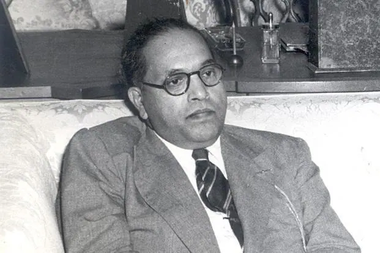
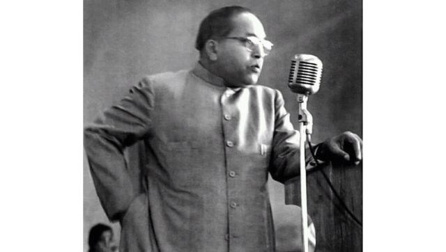

Dr. Bhimrao Ramji Ambedkar, commonly known as B.R. Ambedkar, was a prominent Indian jurist, social reformer, and the chief architect of the Indian Constitution. He dedicated his life to the upliftment of marginalized communities in India, particularly the untouchables.
Dr. Ambedkar played a pivotal role in the framing of the Indian Constitution(also known as Father of Indian Constitution) and worked tirelessly for social justice. His accomplishments include the establishment of numerous educational institutions and his advocacy for the rights of untouchables and other marginalized groups.
He has been honoured with Bharat Ratan award, the highest award of India
Dr. B.R. Ambedkar's education was a remarkable journey of determination and achievement. Despite facing discrimination and adversity due to his allegedly lower-caste background, he pursued education with unwavering resolve.
Early Education
Dr. Ambedkar began his early education at the Elphinstone High School in Bombay. His thirst for knowledge led him to excel in his studies despite facing social prejudice. He was forced to sat outside of the class while other so-called upper-caste people used to sit in class. However, He studied and fought for the rights of women, general labours and untouchables
Higher Studies Abroad
He later went on to study at the University of Bombay, where he earned a degree in economics and political science. His pursuit of higher education took him to the United States, where he completed his postgraduate studies at Columbia University and the London School of Economics.
Doctoral Studies
Dr. Ambedkar's quest for knowledge did not end with his postgraduate studies. He earned a Doctor of Science in Economics from the London School of Economics and a Doctor of Juridical Science from Columbia University. His research and thesis work were significant contributions to the fields of law and economics.
Education Advocate
Throughout his life, Dr. Ambedkar emphasized the importance of education in the upliftment of marginalized communities. He believed that education was the key to breaking the shackles of caste-based discrimination and worked tirelessly to promote education for all.
Dr. B.R. Ambedkar, born on April 14, 1891, in Mhow, Madhya Pradesh, India, devoted his life to the cause of social reform. A renowned scholar, prolific writer, and distinguished statesman, he made significant contributions to Indian society. Towards the later part of his life, he chose to embrace Buddhism as his faith.
Dr. Ambedkar's legacy continues to inspire and guide social justice movements in India and around the world. His contributions to the Indian Constitution and the fight against caste-based discrimination are remembered with great respect.
"I measure the progress of a community by the degree of progress which women have achieved." - B.R. Ambedkar
"Be Educated, Be Organised and Be Agitated" - B.R. Ambedkar


This information is sourced from various books and online resources, including "The Life of Dr. B.R. Ambedkar" by Dhananjay Keer and "Wikipedia."
B. R. Ambedkar. (2023, October 14). In Wikipedia. https://en.wikipedia.org/wiki/B._R._Ambedkar
https://ambedkarinternationalcenter.org/2020/01/16-famous-quotes-by-dr-babasaheb-ambedkar-you-ought-to-know/
Dr. B.R. Ambedkar endured profound experiences of untouchability, casteism, and discrimination in India. Despite these adversities, he pursued his education abroad and achieved recognition as a distinguished barrister. However, instead of choosing a prosperous life abroad, he made the remarkable decision to return to his homeland, driven by a deep commitment to social reform. Among the many decisions he made in his life, it is this selfless dedication to the betterment of society that commands my utmost respect.